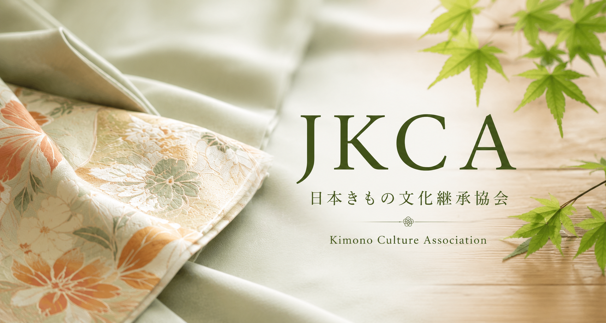
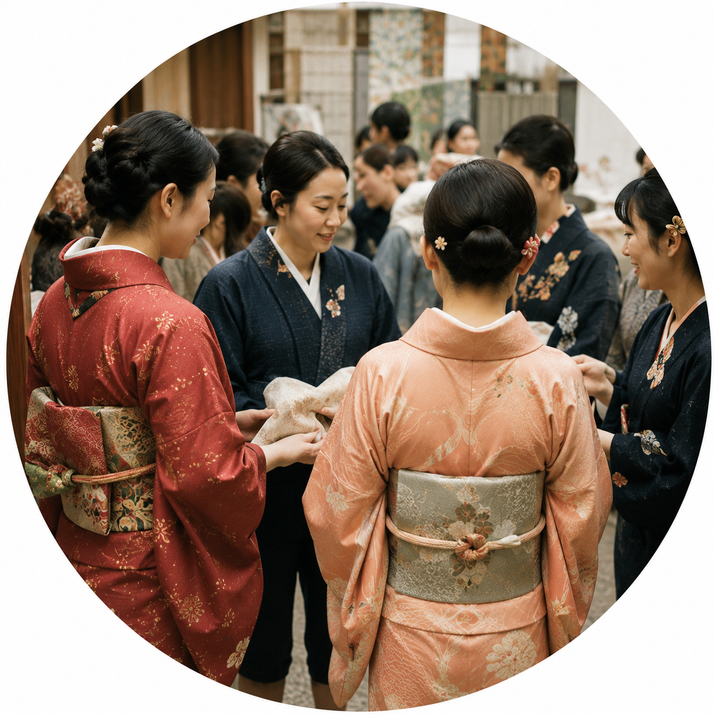
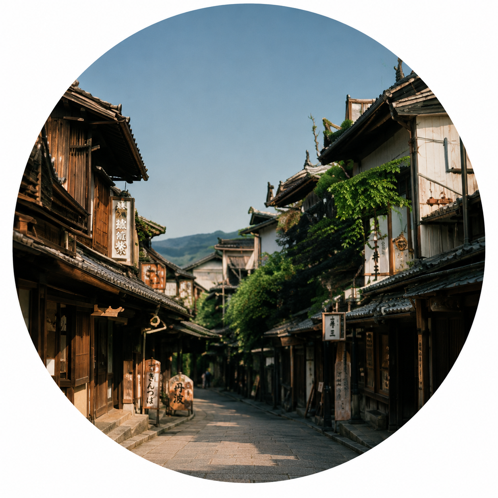
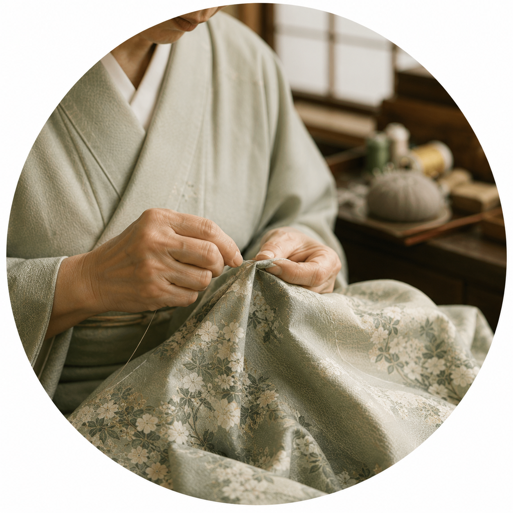

私たちについて
NPO法人 日本きもの文化継承協会（Japan Kimono Culture Association：JKCA）は、日本の伝統衣装である着物の歴史や文化を次世代へ継承し、国内外へ発信することを目的として設立された非営利団体です。
着物は単なる衣服ではなく、日本の歴史、生活様式、美意識、職人技術が詰まった文化遺産です。しかし近年は着用機会の減少や後継者不足などの課題に直面しています。私たちは、教育活動や地域連携、国際交流を通じて、着物文化の保存と発展に取り組んでいます。

私たちの使命
着物文化の歴史的価値を伝え、
日本の伝統文化を未来へつなぐ。
目指す姿
世代や国境を越えて、多くの人々が着物文化に親しみ、
その魅力を理解できる社会を実現する。
私たちの価値観
- 伝統の尊重と継承
- 多様性への理解と交流
- 地域社会への貢献と創造
主な活動

教育普及
学校や地域でのワークショップ、講座、展示会を開催し、子どもから大人まで幅広い層に着物文化の魅力を伝えています。

文化財保護活動
着物は日本の文化財であり、その保護と継承は極めて重要です。私たちは、着物の修復、保存、研究を通じて、文化的価値を守っています。

国際交流事業
海外の文化団体や教育機関と連携し、着物文化の魅力を世界に発信しています。国際的なイベントや展示会にも積極的に参加しています。

地域連携プロジェクト
地域の伝統行事や祭りに参加し、地元の人々と協力して着物文化を盛り上げています。地域の職人や団体とも連携し、地域活性化に貢献しています。

デジタルアーカイブ事業
着物の歴史や文化をデジタル形式で保存・公開し、より多くの人々に着物の歴史や伝統を触れてもらえるようにしています。

人材育成・後継者育成事業
着物の伝統技術や文化を継承するための教育プログラムや研修を提供し、次世代の専門家を育成しています。
活動実績
- 全国25校で着物文化講座を開催
- 延べ5,000名以上が着物体験イベントに参加
- 海外10か国で文化交流プログラムを実施
- 300点以上の歴史的着物資料をデジタルアーカイブ化
参加費
各イベントの参加費は以下の通りです。
- 正会員：年会費 5,000円
- 学生会員：年会費 2,000円
- 賛助会員：年会費 10,000円～
- ボランティア登録：無料